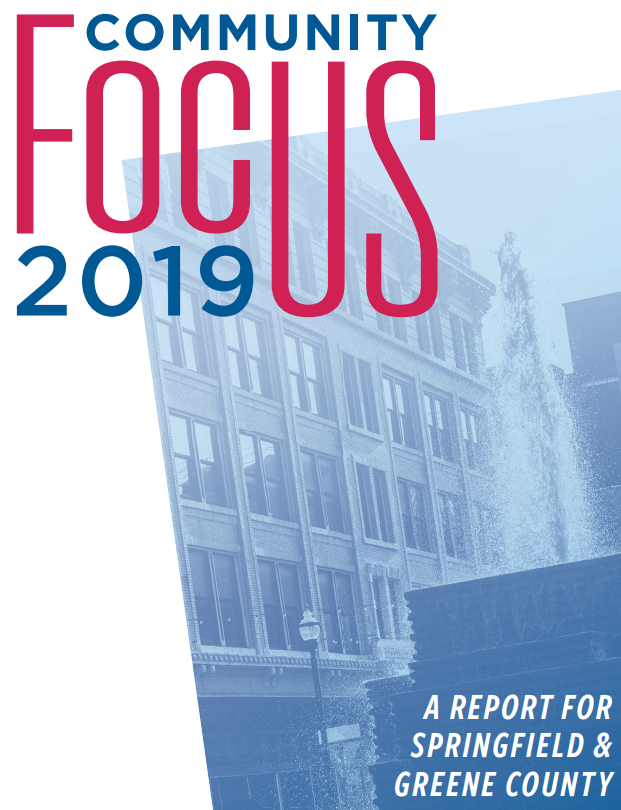

Engaging with the Domestic Policy-Making Process
DOC’S KEY approach (Hughes 2007)
The Policy Process Model (Kraft 2011)
The Collaborative Approach (Clarke and Peterson 2016)
Drury problem to focus on?

Meeting with Nonprofit Reps


Semester Outline





Evaluating the Source